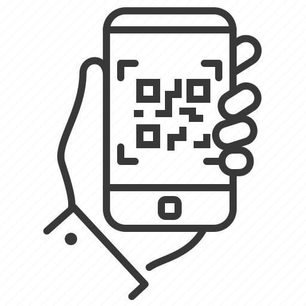

<ion-content>
  <div *ngIf="!isOnEspera">
   
    <ion-button color="warning" expand="block" (click)="ScanQr()">
      
      Ponerse en lista de espera
    </ion-button>
  </div>
  <!--MOSTRAR SOLO SI ESTA EN ESPERA -- LA FUNCION ES ESCANEAR QR-->
  <div *ngIf="isOnEspera">
     <ion-button color="warning" expand="block" (click)="ScanQr()">
      
      Escanear mesa
    </ion-button>
  </div>
</ion-content>